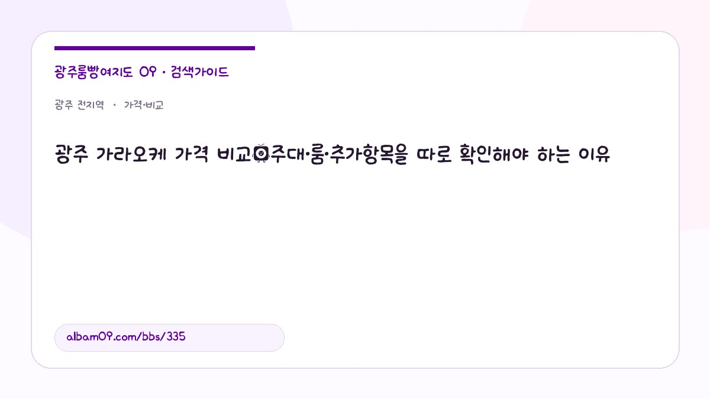

광주 가라오케 가격 비교｜주대·룸·추가항목을 따로 확인해야 하는 이유

가라오케 가격 안내에는 주대와 별개로 룸 사용시간·추가 주문 항목이 있는지 확인해야 총액을 비교할 수 있습니다.
가라오케 주대·룸 구성 구분
주대라고 표시된 금액이 주류 주문의 기본 구성인지, 룸 이용시간까지 포함하는지, 추가 주문이 별도인지부터 확인해야 합니다. 명칭이 같은 패키지도 포함 항목이 다르면 직접 비교할 수 없습니다. 확인된 업체별 공식 가격표가 없는 경우에는 금액을 추정하지 않고 문의 조건을 나눕니다.
광주 전역 등록 업소를 실제 정보로 비교하기
- 러시아퍼블릭 — 등록 위치: 광명메이루즈 부근. 운영 표기: 19:00부터 · 마감시간 문의. 광명메이루즈 부근을 위치 기준으로 삼는 업소입니다. 업소 상세 확인
- 놀이터 — 등록 위치: 상무지구 · 상세 위치 문의. 운영 표기: 방문 전 문의. 상무지구 목록에서 찾아볼 수 있는 업소로 상세 위치는 별도 문의가 필요합니다. 업소 상세 확인
- 태후노래홀 — 등록 위치: 광주광역시 북구 중흥로83 (신안동,2층). 운영 표기: 18:00-06:00. 북구 중흥로 83, 신안동 2층으로 표기되어 있습니다. 업소 상세 확인
이 글에서 확인할 세 가지 질문
- 인원과 기본 이용시간이 같은가?
- 룸 사용료와 선택 주문 항목을 따로 제시하는가?
- 연장·예약 변경 시 추가요금 기준이 있는가?
광주 전역 지역과 관련 검색어 정리
가격표에 주대가 쓰였더라도 룸 기본 이용료와 연장 비용이 포함된다는 뜻은 아닙니다. 표시 가격은 모두 상담문의이며 현재 공개된 금액만으로는 어느 업체가 저렴한지 순위를 낼 수 없습니다.